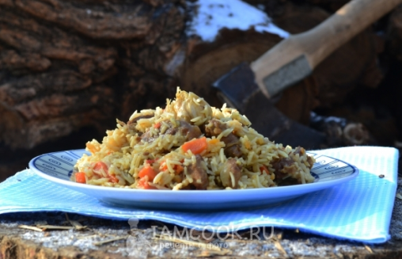

Плов в казане на костре

Ингредиенты:
- Баранина – 500 г
- Рис – 400 г
- Курдючный жир – 250 г
- Лук репчатый – 2-3 шт.
- Морковь – 1 шт.
- Чеснок – 2 головки
- Специи – 1 ст.л.
- Соль – по вкусу
Пошаговый рецепт
- Выложить в казан курдючный жир, из него вытопить смолец, вынуть румяные шкварки, всыпать мелко нарезанный лук.
- Равномерно распределить по стенкам небольшие кусочки баранины.
- Перемешать через 5-7 минут, добавить специи, соль, соломкой нарезанную морковь, две головки чеснока, влить воду. Оставить кипеть до приготовления.
- Вымытый рис высыпать в зирвак, вода должна покрывать рис на 1,5 см
- Оставить на огне до испарения жидкости, собрать рис горкой, накрыть казан крышкой, оставить на 10-20 минут, перемешать.